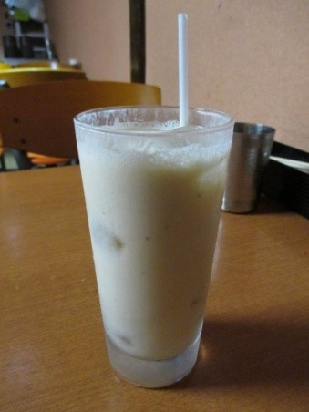
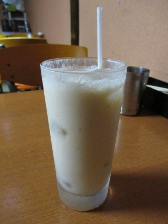
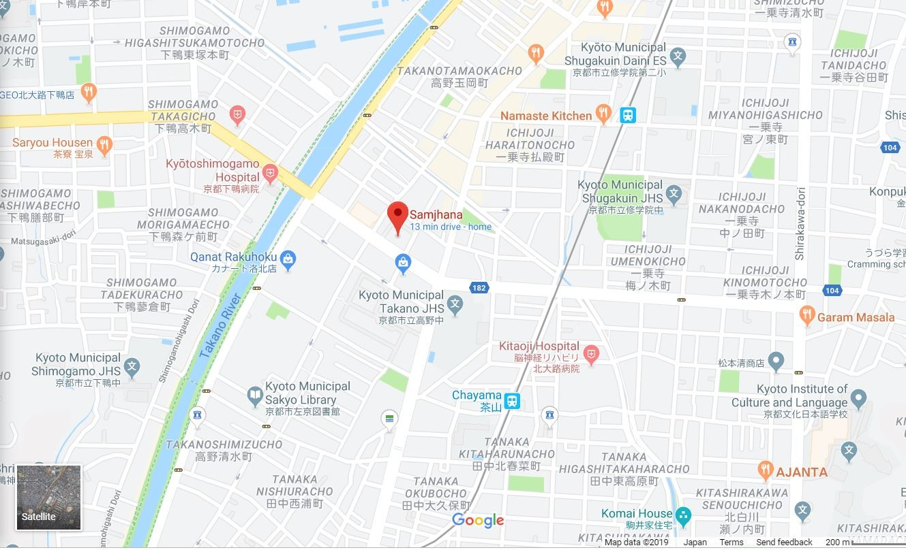
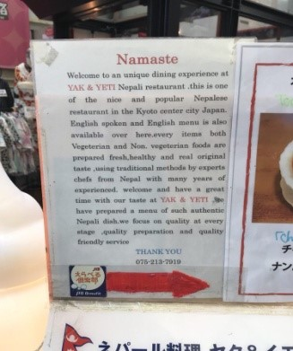
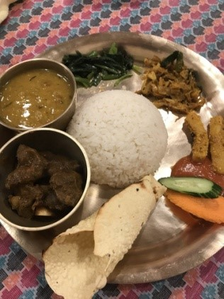
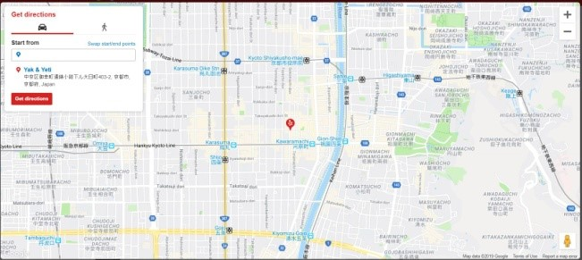
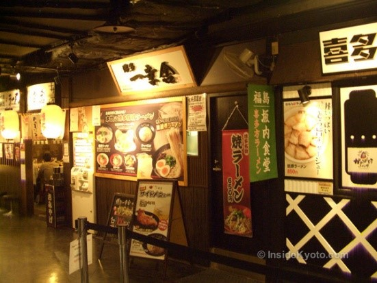
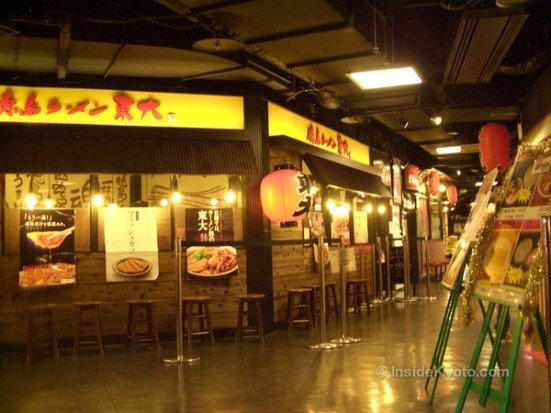
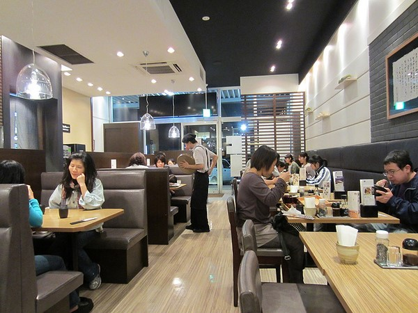

Food From Home Guide
Created by Dipesh Shreshtha
There is always problem for the international student for the food. They were confused about food. What type of food should they eat and where they find the best food with test good. In Japan bento food where found in combine store. For fast-food restaurant are also found. MC Donald is one of famous and busy restaurant. Some famous nepali food and japans food restaurant
Nepali Kitchen Samjhana

The restaurant offers a wide variety of curry, such as spinach, chickpea and seafood curries. The curries are incredibly aromatic and you can smell the food while walking past the restaurant. Of course the main item cooked in the tandoor is naan. The restaurant has many types of naan, some more unusual in Japan than others, like carrot naan, sesame flavored naan and a spicy onion naan. However, if you're not up for something new, Japan's tried and true naans are available, too, such as cheese and butter naan. For naan lovers, there's an all you can eat naan and rice set. Naan was light and fluffy, sweet but not too much so.
 

One thing Samjhana likes to focus on is its course menus. Course menu prices start at ¥2,200 and can go up to ¥8,400. The cheapest course, the A course, includes three dishes, plus either coffee, a lassi or Nepalese tea. The other sets include 6 or more dishes and also have items such as ice cream and a curry of your choice The Drinks that may be hard to find in Japan are Nepalese beer and rum, Nepalese tea and cinnamon tea. If you want to try a bit of everything, there is an all you can drink and eat menu, which allows you to pick whichever drinks you want while dining on as much curry, naan, salad and Indian crackers as you please .The employees at Samjhana are quite friendly and talkative. They are attentive and happy to answer any questions regarding the menu or the restaurant. The restaurant is decorated with posters of the Himalayas, Hindu gods and colorful lanterns, which can make for a festive atmosphere
Yak and Yeti Restaurant
 Yak and Yeti is a restaurant one of the famous restaurant in Kyoto city. It’s famous for the super friendly staffs who never fail to put a smile on our faces. And the other is their legendary Vegetable Phuraula, Nepali style spicy vegetable tempura. It’s amazing. This restaurant is super popular with vegetarians for the range of tasty vegan options they have on their menu but you don’t have to be vegan to enjoy them. They are soooo good. And of course they have plenty of carnivorous options too. We usually share one curry and a naan bread and get a range of their fantastic appetizers. Here’s what we had last time. Ultimately though, it’s not just the food but the atmosphere and the friendly smiles that make Yak and Yeti special
Hours:
Open for Lunch: 11:30 - 14:45
Open for Dinner: 17:00 - 22:00
Closed on Mondays
Kyoto Ramen Koji
 For the ramen lovers Kyoto Ramen Koji offers has eight regional styles of ramen restaurants under one roof. It’s Kyoto Station’s ramen Mecca. Starting from the main atrium of Kyoto Station and looking north (toward Kyoto Tower), take the series of escalators on the left up to the 10th floor. Each of the eight ramen restaurants here specializes in a different regional style of ramen most stores are branches of famous ramen restaurants in those regions. Here’s the drill: buy a ticket for the type of ramen you want from the vending machine in front of the restaurant of your choice (most names are written in Japanese, but there are a lot of pictures) and present the ticket to the man behind the counter
Hours:
11:00 - 22:00
Ootoya Gohan-dokoro
The Ootoya chain is a great new addition to the Japanese eating scene. They feature smart, clean interiors, English/picture menus, fast kitchens and they serve all the standard dishes you’d expect from an old-school shokudo (all around eatery). This branch on Sanjo makes a very convenient lunch stop
Up a flight of stairs on the north side of Sanjo, just a few steps west from Starbucks, you’ll find a clean, well-lit place called Ootoya. This is what you might call a “neo-shokudo” (new version of a classic Japanese eatery). It’s popular with local workers and students. The English/picture menu makes ordering a breeze and the kitchen reliably turns out all the standard favorites you’d expect from this sort of place, some with a few modern twists. It’s a great place for a quick lunch or dinner while downtown, and you won’t break the bank
Hours:
11:00 - 23:00